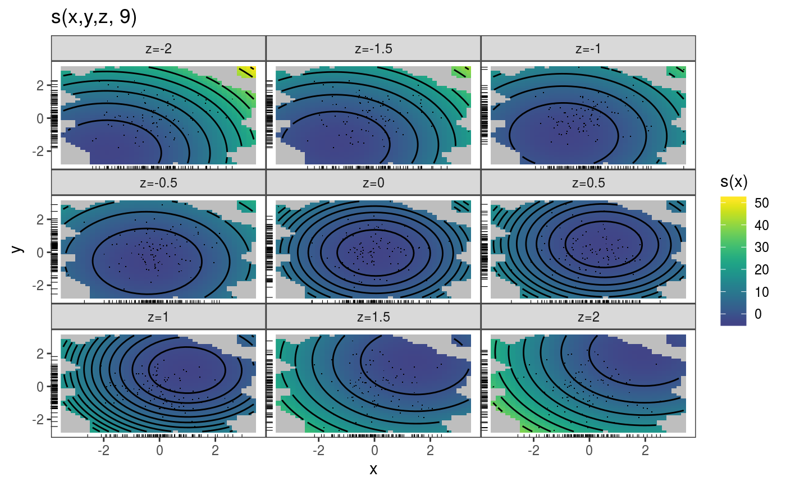
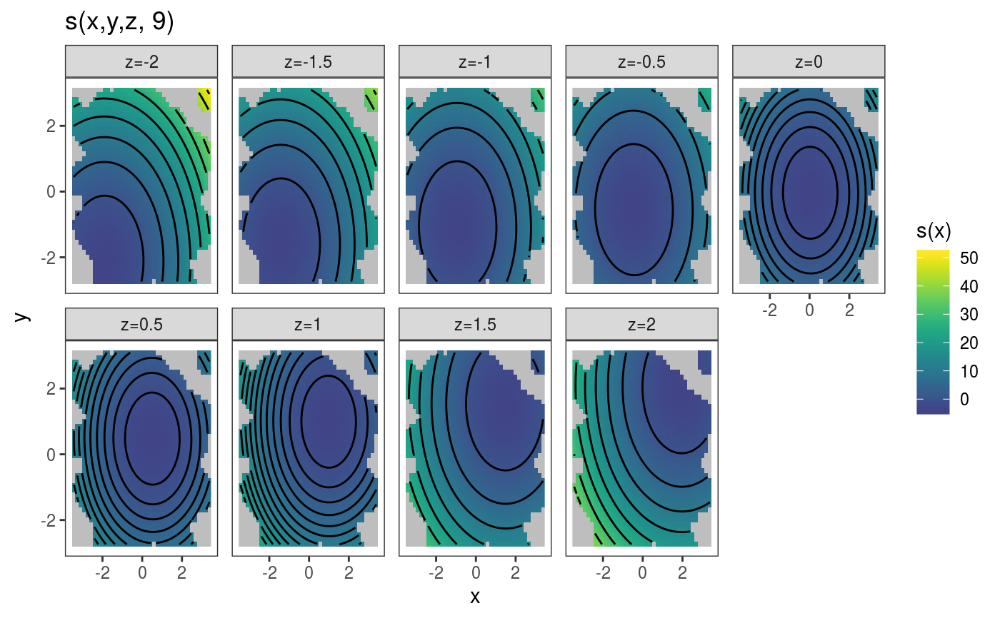
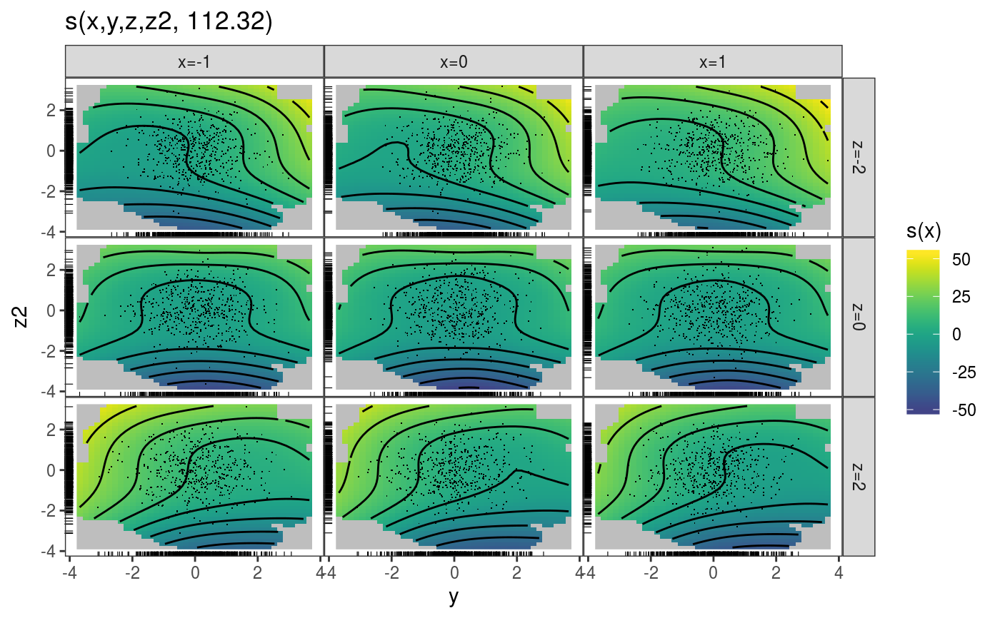
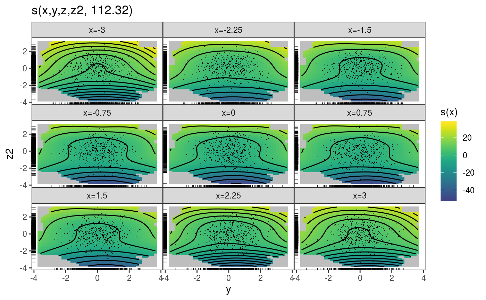

This function allows to slice a multi-dimensional (D > 2) smooth effect, and to plot the resulting sequence of 2D slices in an array of plots.
plotSlice(x, fix, a.facet = list(), ...)
| x | a smooth effect object, extracted using mgcViz::sm. |
|---|---|
| fix | a named list of vectors, where the i-th entry of each vector indicates the value we want to
use for the covariate for i-th slice. When plotting a smooth in (d+2) dimensions,
we need d vectors, because d variables must be fixed. All vectors must have either the same length
(the number of slices) or length 1. |
| a.facet | arguments to be passed to ggplot2::facet_wrap or ggplot2::facet_grid. The former gets
called when |
| ... | further arguments to be passed to plot.mgcv.smooth.MD. |
An objects of class plotSmooth.
### Example 1: plotting slices of 3D smooth # Simulate data and fit GAM library(mgcViz) n <- 1e3 x <- rnorm(n); y <- rnorm(n); z <- rnorm(n) ob <- (x-z)^2 + (y-z)^2 + rnorm(n) b <- gam(ob ~ s(x, y, z)) v <- getViz(b) # Get plot of slices and add layers pl <- plotSlice(x = sm(v, 1), fix = list("z" = seq(-2, 2, length.out = 9))) pl + l_fitRaster() + l_fitContour() + l_points() + l_rug()# Over-ride default layout pl <- plotSlice(x = sm(v, 1), fix = list("z" = seq(-2, 2, length.out = 9)), a.facet = list(nrow = 2)) pl + l_fitRaster() + l_fitContour() + theme(panel.spacing = unit(0.5, "lines"))### Example 2: plotting slices of 4D smooth # Simulate data and fit GAM n <- 5e3 x <- rnorm(n); y <- rnorm(n); z <- rnorm(n); z2 <- rnorm(n) ob <- (x-z)^2 + (y-z)^2 + z2^3 + rnorm(n) b <- bam(ob ~ s(x, y, z, z2), discrete = TRUE) v <- getViz(b) # Plot slices across "z" and "x" pl <- plotSlice(x = sm(v, 1), fix = list("z" = seq(-2, 2, length.out = 3), "x" = c(-1, 0, 1))) pl + l_fitRaster() + l_fitContour() + l_points() + l_rug()# Plot slices across "x", keeping "z" fixed pl <- plotSlice(x = sm(v, 1), fix = list("z" = 0, "x" = seq(-3, 3, length.out = 9))) pl + l_fitRaster() + l_fitContour() + l_points() + l_rug()